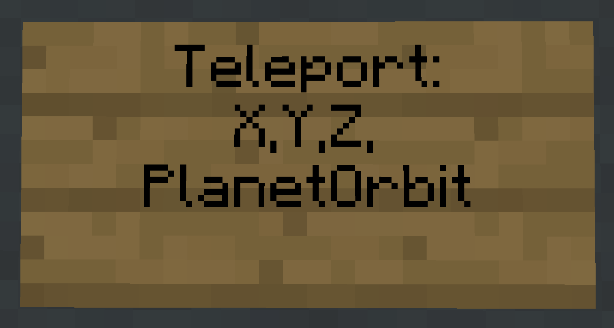

Getting to orbit
You can only travel between the orbits of planets, not the planets themselves, to get from a planet to it's orbit fly up in any spaceship, once you reach y360 you will be taken to the orbit of that planet. To get back down just descend, once you get to y15 you will teleport to the actual planet.
If you aren't sure whether you are in orbit or not, you can always do the
Rift drives
Rift drives are the main way to travel between planets, once fueled, you can easily teleport between different planetary orbits.
Crystallized radon
Crystallized radon is what fuels rift drives, There are a few ways to get it but here are the two easiest:
- Mining redstone ore. (it will sometimes drop)
- Refining amethyst shards and redstone dust. (See materials refinery)
To fuel your rift drive with radon, place a furnace on your ship and put the radon in the top slot. (where you would usually put the item to be smelted)
Teleport signs
These are how you tell your ship where to jump to, to make one place a sign and write
Right clicking a sign like the one above would take you to EarthOrbit at the coordinates x1000, y50, z1000.
Note that the bigger your ship and the further the orbit you are travelling to, the more crystallized radon it will cost to jump, so make sure you have enough to return home!
Orbit names
Below is a list of all currently available planet's and their respective orbit names
| Planet name | Orbit name |
|---|---|
| AlphaPrime | AlphaPOrbit |
| Arkenia | ArkeniaOrbit |
| Earth | EarthOrbit |
| Eriban | EribanOrbit |
| Europa | EuropanOrbit |
| Hydran | HydranOrbit |
| Ilus | IlusOrbit |
| Luna | LunarOrbit |
| Mars | MartianOrbit |
| Mercury | MercuryOrbit |
| MonNilha | MonNilhaOrbit |
| Necrahn | NecrahnOrbit |
| NovaLuna | NovaLunaOrbit |
| NovaTerra | NovaTerraOrbit |
| OmegaPrime | OmegaPOrbit |
| Pluto | PlutonianOrbit |
| Pyrixa | PyrixanOrbit |
| Saturn | SaturnOrbit |
| Talcann | TalcannOrbit |
| TerrakPrime | TerrakPOrbit |
| Titan | TitanianOrbit |
| Zara85C | Zara85COrbit |